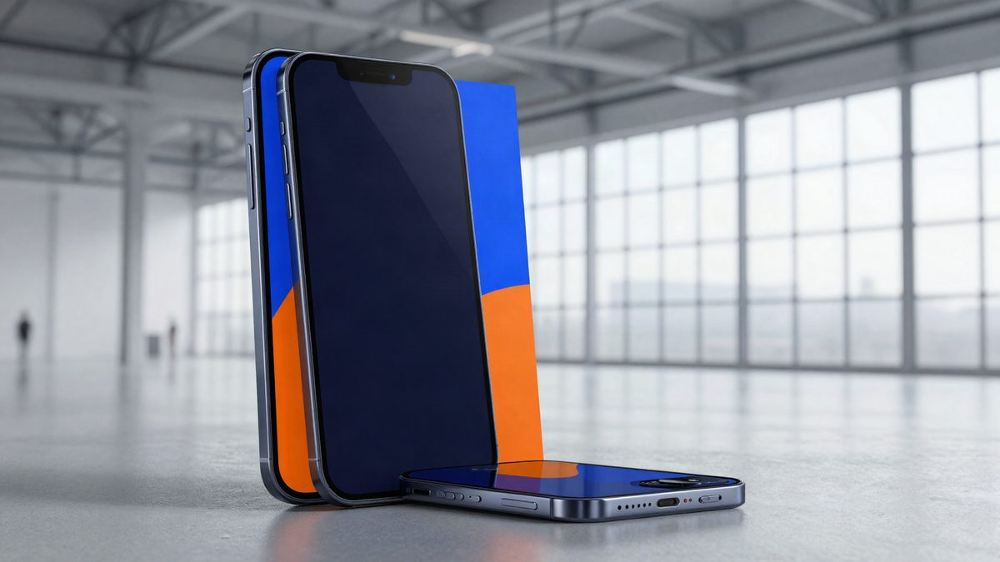

Lens Technology: Zhou Qunfei je nova najbogatija Kineskinja s 127 milijardi juana

Zhou Qunfei, osnivačica Lens Technology, prema listi Hurun Rich List 2026 najbogatija je Kineskinja, s procijenjenih 127 milijardi juana. Počela je kao radnica na traci s dnevnicom od 7 juana, a danas njezina tvrtka proizvodi stakla za Apple, Samsung i Teslu.
Zhou Qunfei, osnivačica i čelnica Lens Technology (Lens Tech), nova je najbogatija Kineskinja. Prema listi Hurun Rich List 2026, koju je Hurun Research Institute objavio 27. listopada, njezino se bogatstvo procjenjuje na 127 milijardi juana (oko 16 milijardi eura). Zajedno s mužem Zheng Junlongom nalazi se na 33. mjestu liste, s ukupno 128 milijardi juana (oko 16,1 milijardi eura). Njihovo se bogatstvo povećalo za 17 milijardi juana u odnosu na prethodnu listu.
Na listi Hurun Global Rich List 2026 Zhou i njezin muž imaju 135 milijardi juana (oko 17 milijardi eura), što ih čini najbogatijima u pokrajini Hunan.
Od tvorničke radnice do dobavljača Applea
Zhou Qunfei rođena je 1970-ih u selu kraj grada Xiangtana u Hunanu. Majka joj je umrla kad je imala pet godina, a otac je slučajno oslijepio. Zbog siromaštva je u nižoj srednjoj školi napustila školovanje. Godine 1985., s 15 godina, otišla je u pokrajinu Guangdong i u maloj tvornici stakala za satove u Shenzhenu radila na traci za dnevnicu od samo 7 juana.
Godine 1993., s 23 godine, pokrenula je vlastiti posao s 20.000 hongkonških dolara ušteđevine. Lens Technology osnovala je 2003. i specijalizirala ga za zaštitna stakla za zaslone mobitela. Prvi veći uspjeh stigao je s narudžbom za Motorolu: model V3 prodao se u više od 100 milijuna primjeraka.
Prema javnim izvješćima, Apple je 2007. razvijao prvi iPhone i trebalo mu je tanko staklo za zaslon, otporno na ogrebotine i padove. Više proizvođača s Tajvana i iz Japana nije uspjelo zadovoljiti zahtjeve, pa se Apple obratio Zhou. Njezin je tim tri mjeseca radio na rješenju i isporučio staklo koje je zadovoljilo uvjete. Od tada je Lens Technology dio Appleova lanca opskrbe.
Danas Lens Technology proizvodi stakla i komponente za mobitele, računala, nosivu elektroniku i automobile. Među klijentima su Apple, Samsung, Huawei, Xiaomi, Tesla, BMW i Mercedes.
Poslovanje i lista
Lens Technology je u 2025. ostvario prihod od 74,41 milijardu juana (oko 9,4 milijarde eura) i neto dobit od 4,02 milijarde juana (oko 505 milijuna eura).
Na listi Hurun 2026. nalazi se 77 poduzetnika iz Hunana, a 29 ih živi u toj pokrajini. Žene čine 23,2 posto poduzetnika na listi, 0,8 postotnih bodova više nego lani. Više od 70 posto njih posao je izgradilo od nule.
Izvor: MyDrivers (快科技)